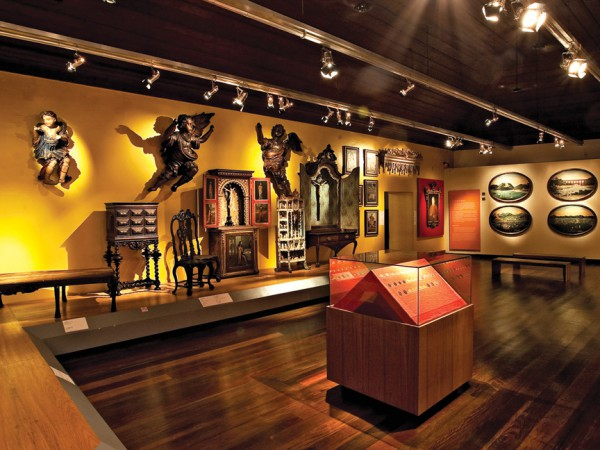

História
O museu foi inaugurado oficialmente em 7 de Março de 1904 com o nome Museu de História Natural. Este importante símbolo da Independência do Brasil está vinculado à Universidade de São Paulo desde 1963, como uma instituição científica, cultural e educacional que exerce pesquisa, ensino e extensão com atuação no campo da História. É responsável por um grande acervo de objetos, mobiliário e obras de arte com relevância histórica, especialmente aquelas que possuem alguma relação com a independência do Brasil e o período histórico correspondente. Uma das obras mais conhecidas de seu acervo é o quadro "Independência ou Morte", pintado pelo artista Pedro Américo, em 1888, recebendo em média 350 mil visitas anuais. Além de exposições, as atividades do Museu do Ipiranga se estendem por meio de programas educativos, como cursos e pesquisas científicas que fazem uso dos recursos humanos e do acervo permanente da instituição. A ampliação de coleções se faz por meio de doações ou aquisições e parte importante das atividades desenvolvidas no museu envolve a conservação física, estudo e documentação do acervo.
Leia Mais